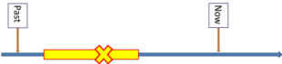

Using time lines

 |
What are time lines? |
Time lines are a very useful way of making the concepts of the
tense system in English clear to those who respond well to images
and diagrams (i.e., most of us).
They are often a quick and easy way to demonstrate meaning rather
than explain it. They need, however, to be properly planned
and accurately reflect the concepts you are clarifying or they do
more harm than good.
Here's an example of a time line used to clarify what is called
the future in the past using the structure was / were going to.
In English, the structure is used to suggest a frustrated or
cancelled plan in,
e.g.:
I was going to see the doctor but I felt a lot better and
cancelled my appointment.

A time line like this can be drawn on the board quite quickly but
there are three important things to notice.
Click here when you have noticed them.
- The line has an arrow pointing towards the future because that's how most of us perceive the direction of 'time's arrow'.
- There is a clear indication of where Now is on the diagram.
- There is some indication of the speaker's perception of the
events. This is important because many tense forms
represent how the speaker feels about events and their
relationship to each other.
For example, if I say,
I went to America
I am telling you about an event I see as finished and completed in the past but if I say
I have been to America
I am implying quite strongly that the fact is relevant to the present or very recent or, often, both.
An eye looking right (to the future) or left (to the past) can be quickly drawn on the board with three curves and a small ellipse, like this:
Now see if you can suggest what the time lines here represent.
Click on the
 when you think you have got it.
when you think you have got it.
|
|
The relationship between the
past-before-the-past and the past as in, e.g.:
She had lost her keys so couldn't get in. I didn't come because I hadn't been invited. I had hardly come through the door when the 'phone rang. |
|
|
A series of past finished
events or states such as:
John took the train to work every day last week. It rained every day on our holiday. I often went to the library when I was young. |
|
 |
One action in the past interrupted by an event but which
then continued such as:
John was cycling to work when he had the idea. He was working in France when I visited him. The postman came while we were working in the garden and we didn't hear him knock. |
 |
One action in the past interrupted by an event
which stopped it such as:
John was cycling to work when he had the accident. She was buying the ferry tickets when she was arrested. They were watching television when the electricity went off. |
|
|
Two long events in the past happening simultaneously,
for example:
I was watching television while she was reading a book. I was working while you were lying on the beach. She was working in the garden as he was repainting the hallway. |
 |
Future long action resulting in a future condition, such
as:
She'll have been travelling for hours and will be tired. They'll have been working all night so it'll be finished. They will have built the new road by the time we come this way again. |
Normally, of course, you would present the time line with an example, marker sentence so it would look something like this:
Using time lines |
There are two ways:
- Off the cuff:
When you encounter a learner clearly having difficulties with the concept which lies behind a tense form, it is worth considering whether quickly sketching a time line on the board will help. It is often a quick and efficient way of making a concept clear. - Prepared:
You can also integrate the use of a time line into the presentation part of a lesson focused on a tense or tenses. This means that you can make it very precise and more attractive. Adding in graphics provides extra information and aids memorisation. Here's an example, for the marker sentence:
We have been working hard in the garden all summer and I'm really pleased with how it looks.
 |
Building time lines |
Whether you have prepared an attractive time line beforehand or
are using one in response to an emerging need, you need to carry the
learners with you as you go. It is
much better to build up the
time line, explaining each part as you go, than to present your
learners with the finished article and get them to try to work out
what it all means.
Like this:
- Start with the marker sentence:
I have been trying to telephone her but I give up and I'm going to visit her. - Then add the place markers for time (Past, Now, Future,
The Future etc.):

Concept check the direction of time: not all cultures see time as progressing from left to right. - Then draw in the nature of the events

Checking at each stage:
How often did he try?
Is he trying now?.

Check the concept again.
When does he decide?
When is the visit? - Give the learners time to copy this as a record to take away. That's important.
To repeat a little: learners will rarely get the full benefit of thinking things
through if you just present the
finished article. If you use PowerPoint in your lessons or a
smart board, this kind of slow build-up is easy to prepare.
Here's an example for you to download and watch (and even use).
Things like this are time-consuming to prepare but can be used again
(and again and again).
Here's a video of showing how to build up a time line or two on
the board. It runs quite slowly because learners need a bit of
space after each transition to understand what's going on.
The slides automatically transition every 7 seconds. You may
need to adjust that if you use it in the classroom or pause the
presentation to give yourself
time to explain and check the concepts as you go along.
Click here for a learners' guide to Understanding English Tenses which makes use of a range of timelines.
| Related guides | |
| the tenses index | this has links to many other guides about tenses |
| the tenses map | this is a map of all the tenses on which you can click to select the guide you need |
| time lines for tenses | this is set of time lines which will help you and your learners understand the concepts which the tense forms encode |
| aspect | a more technical guide to the area in the in-service training section of this site |